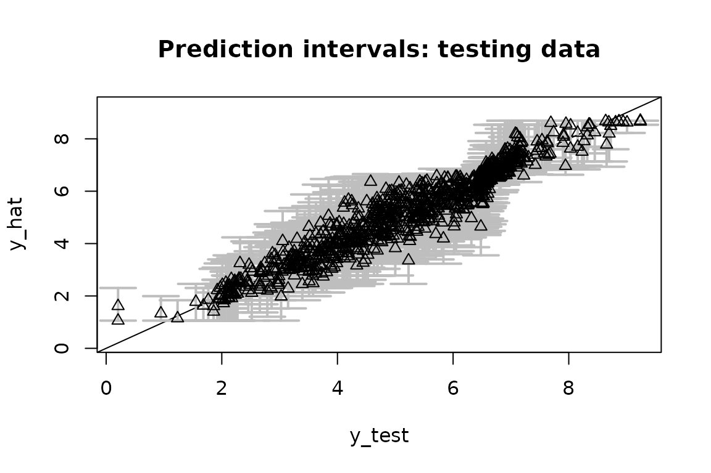
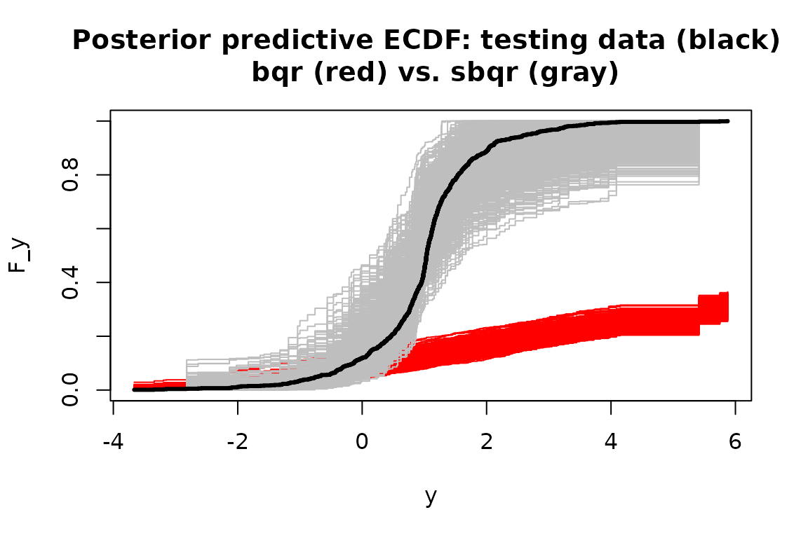
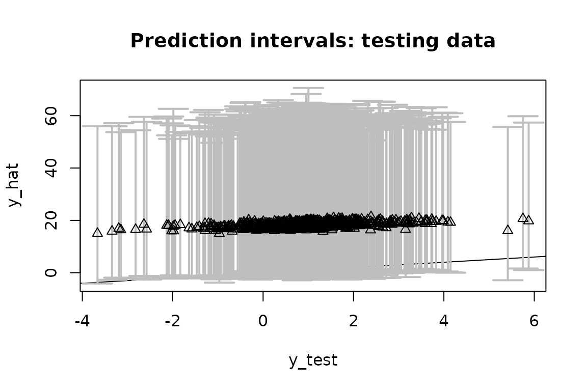
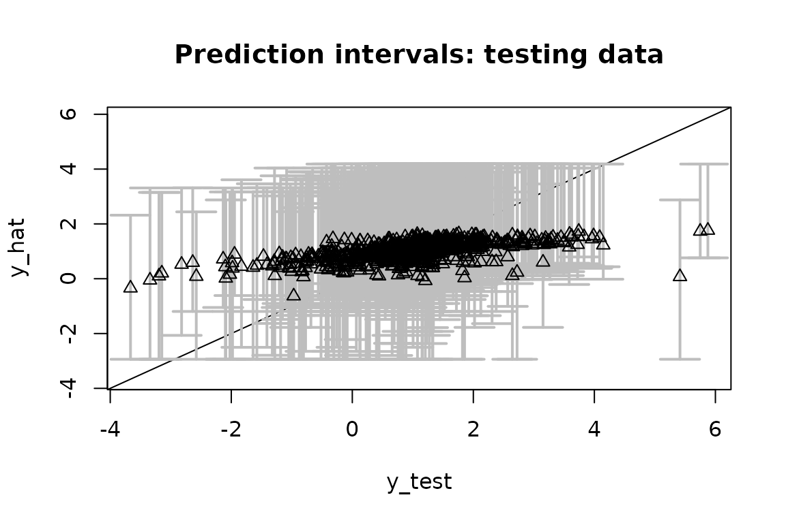
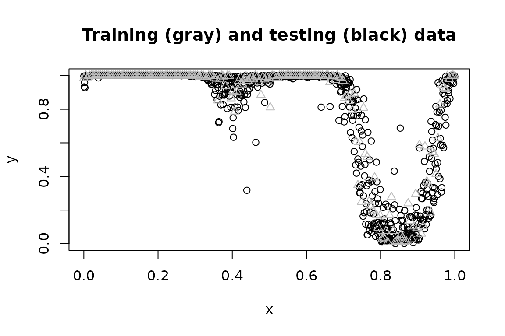

Background: semiparametric regression via data transformations
Data transformations are a useful companion for parametric regression models. A well-chosen or learned transformation can greatly enhance the applicability of a given model, especially for data with irregular marginal features (e.g., multimodality, skewness) or various data domains (e.g., real-valued, positive, or compactly-supported data).
We are interested in providing fully Bayesian inference for semiparametric regression models that incorporate (1) an unknown data transformation and (2) a useful parametric regression model. For paired data \(\{x_i, y_i\}_{i=1}^n\) with \(x_i \in \mathbb{R}^p\) and \(y \in \mathcal{Y} \subseteq \mathbb{R}\), consider the following class of models: \[ g(y_i) = z_i \] \[ z_i \stackrel{indep}{\sim} P_{Z \mid \theta, X = x_i} \] Here, \(g\) is a (monotone increasing) data transformation to be learned, while \(P_{Z \mid \theta, X}\) may be considered the core parametric regression model indexed by unknown parameters \(\theta\).
Examples. We focus on the following important special cases of \(P_{Z \mid \theta, X}\):
The linear model is a natural starting point: \[ z_i = x_i'\theta + \epsilon_i, \quad \epsilon_i \stackrel{iid}{\sim} N(0, \sigma_\epsilon^2) \] The transformation \(g\) broadens the applicability of this useful class of models, including for positive or compactly-supported data (see below), while \(P_{Z \mid \theta, X=x} = N(x'\theta, \sigma_\epsilon^2)\).
The quantile regression model replaces the Gaussian assumption in the linear model with an asymmetric Laplace distribution (ALD) to target the \(\tau\)th quantile of \(z\) at \(x\), or equivalently, the \(g^{-1}(\tau)\)th quantile of \(y\) at \(x\). The ALD is quite often a very poor model for real data, especially when \(\tau\) is near zero or one. The transformation \(g\) offers a pathway to significantly improve the model adequacy, while still targeting the desired quantile of the data.
The Gaussian process (GP) model generalizes the linear model to include a nonparametric regression function, \[ z_i = f_\theta(x_i) + \epsilon_i, \quad \epsilon_i \stackrel{iid}{\sim} N(0, \sigma_\epsilon^2) \] where \(f_\theta\) is a GP and \(\theta\) parameterizes the mean and covariance functions. Although GPs offer substantial flexibility for the regression function \(f_\theta\), this model may be inadequate when \(y\) has irregular marginal features or a restricted domain (e.g., positive or compact).
Challenges: The goal is to provide fully Bayesian posterior inference for the unknowns \((g, \theta)\) and posterior predictive inference for future/unobserved data \(\tilde y(x)\). We prefer a model and algorithm that provide both (i) flexible modeling of \(g\) and (ii) efficient posterior and predictive computations.
Innovations: Our approach (https://arxiv.org/abs/2306.05498) specifies a nonparametric model for \(g\), yet also provide Monte Carlo (not MCMC) sampling for the target posterior and predictive distributions. As a result, we control the approximation accuracy via the number of simulations, but do not require the lengthy runs, burn-in periods, convergence diagnostics, or inefficiency factors that accompany MCMC.
Using SeBR
The R package SeBR is installed and loaded
as follows:
The main functions in SeBR are:
sblm: Monte Carlo sampling for posterior and predictive inference with the semiparametric Bayesian linear model;sbsm: Monte Carlo sampling for posterior and predictive inference with the semiparametric Bayesian spline model, which replaces the linear model with a spline for nonlinear modeling of \(x \in \mathbb{R}\);sbqr: blocked Gibbs sampling for posterior and predictive inference with the semiparametric Bayesian quantile regression; andsbgp: Monte Carlo sampling for predictive inference with the semiparametric Bayesian Gaussian process model.
Each function returns a point estimate of \(\theta\) (coefficients),
posterior samples of the transformation \(g\) (post_g), and posterior
predictive samples of \(\tilde y(x)\)
at some specified testing points \(X_{test}\) (post_ytilde), as
well as other function-specific quantities (e.g., posterior draws of
\(\theta\),
post_theta).
Note: The package also includes Box-Cox variants of
these functions, i.e., restricting \(g\) to the (signed) Box-Cox parametric
family \(g(t; \lambda) = \{\mbox{sign}(t)
\vert t \vert^\lambda - 1\}/\lambda\) with known or unknown \(\lambda\). The parametric transformation is
less flexible, especially for irregular marginals or restricted domains,
and requires MCMC sampling. These functions (e.g., blm_bc,
etc.) are primarily for benchmarking.
Semiparametric Bayesian linear models with sblm
We simulate data from a transformed linear model:
set.seed(123) # for reproducibility
# Simulate data from a transformed linear model:
dat = simulate_tlm(n = 200, # number of observations
p = 10, # number of covariates
g_type = 'step' # type of transformation (here, positive data)
)
# Training data:
y = dat$y; X = dat$X
# Testing data:
y_test = dat$y_test; X_test = dat$X_test sblm quickly produces Monte Carlo samples of \((\theta, g, \tilde y(X_{test}))\) under the
semiparametric Bayesian linear model:
# Fit the semiparametric Bayesian linear model:
fit = sblm(y = y,
X = X,
X_test = X_test)
#> [1] "6 seconds remaining"
#> [1] "5 seconds remaining"
#> [1] "2 seconds remaining"
#> [1] "Total time: 7 seconds"
names(fit) # what is returned
#> [1] "coefficients" "post_theta" "post_ytilde" "post_g"
#> [5] "model" "y" "X" "X_test"
#> [9] "psi" "approx_g" "sigma_epsilon"These are Monte Carlo (not MCMC) samples, so we do not require further algorithm diagnostics.
First, we check for model adequacy using posterior predictive
diagnostics. Specifically, we compute the empirical CDF on both
y_test (black) and on each simulated testing predictive
dataset from post_ytilde (gray):
Despite the challenging features of this marginal distribution, the proposed model appears to be adequate.
Remark: Posterior predictive diagnostics do not
require training/testing splits and are typically performed in-sample.
If X_test is left unspecified in sblm, then
the posterior predictive draws are given at X and can be
compared to y. Naturally, the out-of-sample diagnostics
above offer a more rigorous check.
Next, we evaluate the predictive ability on the testing dataset by
computing and plotting the out-of-sample prediction intervals at
X_test and comparing them to y_test. There is
a built-in function for this:
# Evaluate posterior predictive means and intervals on the testing data:
plot_pptest(fit$post_ytilde,
y_test,
alpha_level = 0.10) # coverage should be >= 90% 
#> [1] 0.929The out-of-sample predictive distributions are well-calibrated.
Finally, we summarize the posterior inference for the transformation \(g\) and the regression coefficients \(\theta\) and compare to the ground truth values. First, we plot the posterior draws of \(g\) (gray), the posterior mean of \(g\) (black), and the true transformation (triangles):
The posterior distribution of \(g\) accurately matches the true transformation.
The regression coefficients are also recovered:
# Check: correlation with true coefficients
cor(dat$beta_true[-1],
coef(fit)[-1]) # excluding the intercept
#> [1] 0.9431343Remark: The location-scale of the data-generating process and model may not match exactly. Thus, we use correlations to compare the regression coefficients \(\theta\) (while omitting the intercept) and apply location-scale shifts of the transformations \(g\) to ensure comparability. This is only a byproduct of the simulated data setting and does not matter for real data analysis.
Note: Try repeating this exercise with
blm_bc in place of sblm. The Box-Cox
transformation cannot recover the transformation accurately, the model
diagnostics are alarming, and the predictions deteriorate
substantially.
Semiparametric Bayesian quantile regression with
sbqr
We now consider Bayesian quantile regression, which specifies a linear model with ALD errors. First, we simulate data from a heteroskedastic linear model. Heteroskedasticity often produces conclusions that differ from traditional mean regression. Here, we do not include a transformation, so the data-generating process does not implicitly favor our approach over traditional Bayesian quantile regression (i.e., with \(g(t) = t\) the identity).
# Simulate data from a heteroskedastic linear model (no transformation):
dat = simulate_tlm(n = 200, # number of observations
p = 10, # number of covariates
g_type = 'box-cox', lambda = 1, # no transformation
heterosked = TRUE # heteroskedastic errors
)
# Training data:
y = dat$y; X = dat$X
# Testing data:
y_test = dat$y_test; X_test = dat$X_test Now, we fit two Bayesian quantile regression models: the traditional
version without a transformation (bqr) and the proposed
alternative (sbqr). We target the \(\tau = 0.05\) quantile.
# Quantile to target:
tau = 0.05
# (Traditional) Bayesian quantile regression:
fit_bqr = bqr(y = y,
X = X,
tau = tau,
X_test = X_test,
verbose = FALSE # omit printout
)
# Semiparametric Bayesian quantile regression:
fit = sbqr(y = y,
X = X,
tau = tau,
X_test = X_test,
verbose = FALSE # omit printout
)
names(fit) # what is returned
#> [1] "coefficients" "fitted.values" "post_theta" "post_ytilde"
#> [5] "post_qtau" "post_g" "model" "y"
#> [9] "X" "X_test" "psi" "approx_g"
#> [13] "tau"For both model fits, we evaluate the same posterior predictive
diagnostics as before. Specifically, we compute the empirical CDF on
both y_test (black) and on each simulated testing
predictive dataset from post_ytilde for sbqr
(gray) and bqr (red):

Without the transformation, the Bayesian quantile regression model is not a good model for the data. The learned transformation completely resolves this model inadequacy—even though there was no transformation present in the data-generating process.
Finally, we can asses the quantile estimates on the testing data.
First, consider bqr:
# Quantile point estimates:
q_hat_bqr = fitted(fit_bqr)
# Empirical quantiles on testing data:
(emp_quant_bqr = mean(q_hat_bqr >= y_test))
#> [1] 0.026
# Evaluate posterior predictive means and intervals on the testing data:
(emp_cov_bqr = plot_pptest(fit_bqr$post_ytilde,
y_test,
alpha_level = 0.10))
#> [1] 0.978Recall that these are quantile regression models at \(\tau\), so we expect them to be asymmetric
about y_test.
The out-of-sample empirical quantile is 0.026 (the target is \(\tau = 0.05\)) and the 90% prediction interval coverage is 0.978.
Repeat this evaluation for sbqr:
# Quantile point estimates:
q_hat = fitted(fit)
# Empirical quantiles on testing data:
(emp_quant_sbqr = mean(q_hat >= y_test))
#> [1] 0.034
# Evaluate posterior predictive means and intervals on the testing data:
(emp_cov_sbqr = plot_pptest(fit$post_ytilde,
y_test,
alpha_level = 0.10))
#> [1] 0.968Now the out-of-sample empirical quantile is 0.034 and the 90%
prediction interval coverage is 0.968. sbqr is better
calibrated to \(\tau\), while both
methods are slightly overconservative in the prediction interval
coverage. However, sbqr produce significantly smaller
prediction intervals while maintaining this conservative coverage, and
thus provides more powerful and precise inference.
Note: try this again for other quantiles, such as \(\tau \in\{0.25, 0.5\}\). As \(\tau\) approaches 0.5 (i.e., median regression), the problem becomes easier and the models are better calibrated.
Semiparametric Bayesian Gaussian processes with
sbgp
Consider a challenging scenario with (i) a nonlinear regression function of \(x \in \mathbb{R}\) and (ii) Beta marginals, so the support is \(\mathcal{Y} = [0,1]\). Simulate data accordingly:
# Training data:
n = 200 # sample size
x = seq(0, 1, length = n) # observation points
# Testing data:
n_test = 1000
x_test = seq(0, 1, length = n_test)
# True inverse transformation:
g_inv_true = function(z)
qbeta(pnorm(z),
shape1 = 0.5,
shape2 = 0.1) # approx Beta(0.5, 0.1) marginals
# Training observations:
y = g_inv_true(
sin(2*pi*x) + sin(4*pi*x) + .25*rnorm(n)
)
# Testing observations:
y_test = g_inv_true(
sin(2*pi*x_test) + sin(4*pi*x_test) + .25*rnorm(n)
)
plot(x_test, y_test,
xlab = 'x', ylab = 'y',
main = "Training (gray) and testing (black) data")
lines(x, y, type='p', col='gray', pch = 2)
To highlight the challenges in this problem, we first consider a Box-Cox-transformed GP and evaluate the out-of-sample predictive performance:
# Fit the Box-Cox Gaussian process model:
fit_bc = bgp_bc(y = y,
locs = x,
locs_test = x_test)
#> [1] "Initial GP fit..."
#> [1] "Updated GP fit..."
# Fitted values and on the testing data:
y_hat_bc = colMeans(fit_bc$post_ytilde)
# 90% prediction intervals on the testing data:
pi_y_bc = t(apply(fit_bc$post_ytilde, 2, quantile, c(0.05, .95)))
# Average PI width:
(width_bc = mean(pi_y_bc[,2] - pi_y_bc[,1]))
#> [1] 0.2668766
# Empirical PI coverage:
(emp_cov_bc = mean((pi_y_bc[,1] <= y_test)*(pi_y_bc[,2] >= y_test)))
#> [1] 0.894
# Plot these together with the actual testing points:
plot(x_test, y_test, type='n',
ylim = range(pi_y_bc, y_test), xlab = 'x', ylab = 'y',
main = paste('Fitted values and prediction intervals: \n Box-Cox Gaussian process'))
# Add the intervals:
polygon(c(x_test, rev(x_test)),
c(pi_y_bc[,2], rev(pi_y_bc[,1])),
col='gray', border=NA)
lines(x_test, y_test, type='p') # actual values
lines(x_test, y_hat_bc, lwd = 3) # fitted valuesThe Box-Cox transformation adds some flexibility to the GP, but is insufficient for these data. The prediction intervals are unnecessarily wide and do not respect the support \(\mathcal{Y} = [0,1]\), while the estimated mean function does not fully capture the trend in the data.
Now fit the semiparametric Bayesian GP model:
# Fit the semiparametric Gaussian process model:
fit = sbgp(y = y,
locs = x,
locs_test = x_test)
#> [1] "Initial GP fit..."
#> [1] "Updated GP fit..."
#> [1] "Sampling..."
#> [1] "Done!"
names(fit) # what is returned
#> [1] "coefficients" "fit_gp" "post_ytilde" "post_g"
#> [5] "model" "y" "X" "approx_g"
#> [9] "sigma_epsilon"
coef(fit) # estimated regression coefficients (here, just an intercept)
#> [1] 0.02256625Evaluate the out-of-sample predictive performance on the testing data:
# Fitted values and on the testing data:
y_hat = colMeans(fit$post_ytilde)
# 90% prediction intervals on the testing data:
pi_y = t(apply(fit$post_ytilde, 2, quantile, c(0.05, .95)))
# Average PI width:
(width = mean(pi_y[,2] - pi_y[,1]))
#> [1] 0.2150783
# Empirical PI coverage:
(emp_cov = mean((pi_y[,1] <= y_test)*(pi_y[,2] >= y_test)))
#> [1] 0.955
# Plot these together with the actual testing points:
plot(x_test, y_test, type='n',
ylim = range(pi_y, y_test), xlab = 'x', ylab = 'y',
main = paste('Fitted values and prediction intervals: \n semiparametric Gaussian process'))
# Add the intervals:
polygon(c(x_test, rev(x_test)),
c(pi_y[,2], rev(pi_y[,1])),
col='gray', border=NA)
lines(x_test, y_test, type='p') # actual values
lines(x_test, y_hat, lwd = 3) # fitted valuesUnlike the Box-Cox version, sbgp respects the support of
the data \(\mathcal{Y} = [0,1]\),
captures the trend, and provides narrower intervals (average widths are
0.215 compared to 0.267) with better coverage (0.955 for
sbgp and 0.894 for Box-Cox).
Despite the significant complexities in the data, sbgp
performs quite well out-of-the-box:
the nonlinearity is modeled adequately;
the support of the data is enforced automatically;
the out-of-sample prediction intervals are sharp and calibrated; and
the computations are fast.
Note: sbgp also applies for \(x \in \mathbb{R}^p\) with \(p >1\), such as spatial or
spatio-temporal data. Such cases may require more careful consideration
of the mean and covariance functions: the default mean function is a
linear regression with the intercept only, while the default covariance
function is an isotropic Matern function. However, many other options
are available (inherited from the GpGp package).